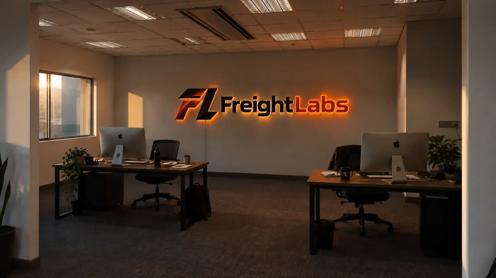

Unclear capabilities
Visitors cannot quickly see your services, coverage, facilities, or industry experience. They may also struggle to see why they should trust you.
We build fast, modern websites that help transportation companies earn trust and get more quote requests.

A polished website can still lose freight buyers.
Modern, fast websites for transportation businesses that build trust, communicate capability, and turn freight buyers into qualified inquiries.
Visitors cannot quickly see your services, coverage, facilities, or industry experience. They may also struggle to see why they should trust you.
Template copy makes specialized logistics providers sound interchangeable.
Heavy pages and awkward mobile journeys weaken trust before a buyer reaches the quote form.
Hidden calls to action, long forms, and weak proof prevent qualified visitors from taking the next step.
You’ll always know what we’re working on, why it matters, and what comes next.
Review positioning, content, UX, speed, and conversion.
Map audiences, pages, messages, and user journeys.
Create a clear visual system and responsive experience.
Develop, test, track, and prepare the launch.
Use visitor and lead data to refine the experience.
We organize the site around what buyers need to know before they trust you with their freight, inventory, or deliveries.
We turn complex services, facilities, and coverage areas into a clear story buyers can understand.
Your approved design becomes a polished site that loads quickly, works across devices, and is easy for your team to manage.
We protect the launch, verify the tracking, and use real visitor behavior to make the website more useful over time.
Make pages easy to read and use on phones, tablets, and desktop screens.
Give each page a clear title and useful links so buyers and search engines can find it.
Ask for the details sales needs and send each form to the right team.
Test key pages, links, forms, and redirects before the site goes live.
Review the site after launch and agree on any fixes or updates your team needs.
Reach buyers evaluating logistics providers.
We build the work around your logistics business, your goals, and the people you want to reach. That starts with services, buyer questions, website content, and quote paths.
Each step helps turn interest into a useful sales conversation.
A clear plan, useful work, and regular checks on what happens next.
Agree on page needs, buyer paths, and site goals.
Write the copy and design the key pages for your review.
Develop the approved pages and test forms and tracking.
Check redirects, forms, and the site before handoff.
Your proposal sets the timeline. Page count, connected tools, and review speed affect the launch date.
We plan, write, design, and build websites for logistics firms. Your site explains your services, works well on phones, and gives buyers a clear way to ask for a quote.
We agree on the work and how we will track it before we start.
Talk through your goals with Alex and find useful next steps for your business.
Logistics Web Design is planned around your business, goals, and the help you need.
The price depends on the scope of work and the services and markets you want to reach.
We’ll talk through your goals and suggest a plan that fits your business.
Get a plan and priceWe build the plan around your business, main goals, and budget.
Timing depends on page count, content readiness, integrations, and approval speed. The proposal defines milestones before work begins.
Yes. We can write copy about your services, markets, buyers, and what makes you different.
Often, yes. We check your current platform, editing needs, and any technical limits first. Then we suggest a plan for moving the site.
Yes. Each site includes a technical SEO foundation. Ongoing rankings may need a separate plan for content and trusted links.
Yes. The project can include forms, call tracking, analytics, CRM routing, and supported connections to your other tools.
Depending on your plan, support can include fixes, updates, testing, reports, and SEO work.
Book a discovery call to talk through your logistics website, your buyers, and what your business needs next, and where we can help.
Let’s talk about your website.
Schedule a Discovery CallNo pressure. Just a helpful talk about your business.